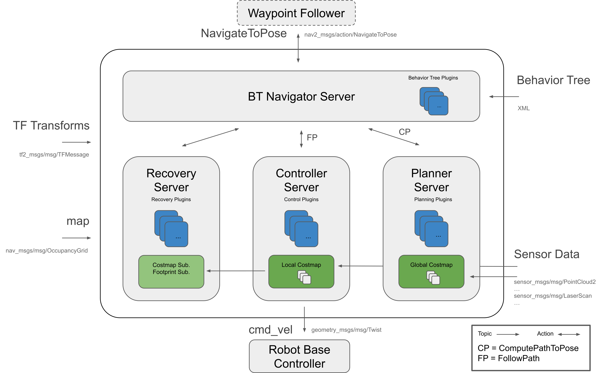
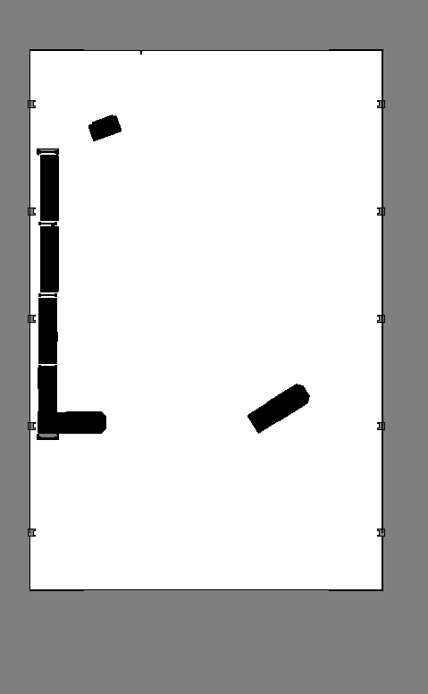
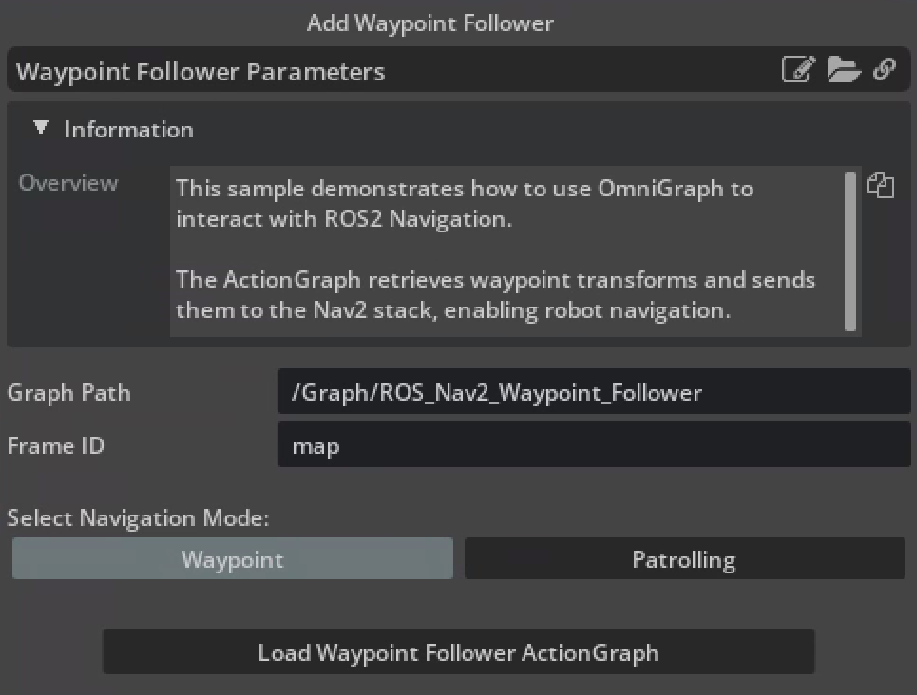

ROS 2 Navigation#
지원 제한 사항
Isaac Sim과 함께하는 ROS 2 Navigation은 Pixi 기반 설치를 사용하는 Linux와 Windows에서 완전히 지원됩니다. Windows (WSL)에서는 Isaac Sim과 함께하는 ROS 2 Navigation이 부분적으로 지원되며 잠재적으로 오류가 발생할 수 있습니다.
참고
Windows를 실행하는 멀티 GPU 시스템에서는 이 씬을 로드하고 재생하면 현재 치명적인 애플리케이션 충돌이 발생할 수 있습니다. 이것은 알려진 문제이며 향후 릴리스에서 해결될 것입니다.
Learning Objectives#
이 ROS2 샘플은 ROS2 Nav2와 통합된 NVIDIA Isaac Sim을 시연합니다.
Getting Started#
사전 준비사항
Isaac Sim을 실행하기 전에 터미널에서 ROS 2 설치를 소스해야 합니다.
이 샘플을 실행하려면 Nav2 프로젝트가 필요합니다. Nav2 설치는 Nav2 installation page를 참조하세요.
Window > Extensions로 이동하여 Extension Manager 창에서
isaacsim.ros2.bridgeExtension을 활성화합니다.이 튜토리얼에는 NVIDIA Isaac Sim 다운로드의 일부로 제공되는
carter_navigation,iw_hub_navigation,isaac_ros_navigation_goalROS2 패키지가 필요합니다. 이 ROS2 패키지는 해당ros2_ws내에 위치합니다. 이 패키지에는 필요한 launch 파일, navigation 파라미터, 로봇 모델이 포함되어 있습니다. ROS 2 workspace가 올바르게 빌드되고 소스되었는지 확인하기 위해 ROS 2 Installation (Default), 특히 Setup ROS 2 Workspaces 단계를 완료하세요.
참고
Windows 11에서는 머신 구성에 따라 RViz2가 제대로 열리지 않을 수 있습니다.
Nav2 Setup#
이 블록 다이어그램은 Nav2에 필요한 ROS2 메시지를 보여줍니다:
{kind=link}

이 시나리오에서 Nav2로 발행되는 다음 토픽과 메시지 유형:
ROS2 Topic
ROS2 Message Type
/tf
tf2_msgs/TFMessage
/odom
nav_msgs/Odometry
/map
nav_msgs/OccupancyGrid
/point_cloud
sensor_msgs/PointCloud
/scan
sensor_msgs/LaserScan (외부 pointcloud_to_laserscan 노드에서 발행)
Occupancy Map#
이 시나리오에서는 occupancy map이 필요합니다. 이 샘플에서는 NVIDIA Isaac Sim 내의 Occupancy Map Generator extension을 사용하여 창고 환경의 occupancy map을 생성합니다.
Window > Examples > Robotics Examples로 이동합니다. Robotics Examples 탭을 클릭합니다. 왼쪽의 섹션을 확장합니다. Nova Carter robot이 있는 창고 시나리오를 로드하려면 예제: ROS2 > Navigation > Nova Carter를 엽니다.
뷰포트 왼쪽 상단 모서리에서 Camera를 클릭합니다. 드롭다운 메뉴에서 Top을 선택합니다.
Tools > Robotics > Occupancy Map으로 이동합니다.
Occupancy Map extension에서 Origin이
X: 0.0, Y: 0.0, Z: 0.0으로 설정되어 있는지 확인합니다. 하한값의 경우Z: 0.1로 설정합니다. 상한값의 경우Z: 0.62로 설정합니다. 상한값 Z 거리는 Nova Carter에 탑재된 Lidar의 지면으로부터의 수직 거리에 맞게 0.62미터로 설정되었음을 주의하세요.stage에서
warehouse_with_forkliftsprim을 선택합니다. Occupancy Map extension에서 BOUND SELECTION을 클릭합니다. occupancy map의 경계가 선택된 warehouse_with_forklifts prim을 포함하도록 업데이트되었는지 확인합니다. 지도 파라미터가 이제 다음과 유사하게 보이는지 확인합니다:stage에서
Nova_Carter_ROSprim을 삭제합니다.설정이 완료되면 CALCULATE를 클릭하고 VISUALIZE IMAGE를 클릭합니다. Visualization 팝업이 나타납니다.
Rotate Image에서 180도를 선택하고 Coordinate Type에서 ROS Occupancy Map Parameters File (YAML)을 선택합니다. RE-GENERATE IMAGE를 클릭합니다. ROS 카메라와 Isaac Sim 카메라는 다른 좌표를 사용합니다.
Save YAML을 클릭하고 YAML 파일을
~/<ros2_ws>/src/navigation/carter_navigation/maps/carter_warehouse_navigation.yaml에 저장합니다.NVIDIA Isaac Sim의 visualization 탭으로 돌아가서 Save Image를 클릭합니다. 이미지 이름을
carter_warehouse_navigation.png로 지정하고 지도 파라미터 파일과 같은 디렉터리에 저장하도록 선택합니다.최종 저장된 이미지가 다음과 같은지 확인합니다:

{kind=link}
{kind=link}
{kind=link}
이제 Nav2와 함께 사용할 수 있는 occupancy map이 준비되었습니다.
Running Nav2#
Nav2 with Nova Carter in a Small Warehouse#
Window > Examples > Robotics Examples로 이동한 다음 Robotics Examples 탭을 클릭하고 왼쪽의 섹션을 확장하여 예제를 엽니다: Nova Carter robot이 있는 창고 시나리오를 로드하려면 ROS2 > Navigation > Nova Carter.
시뮬레이션을 시작하려면 Play를 클릭합니다.
새 터미널에서 Nav2를 시작하기 위해 ROS2 launch 파일을 실행합니다.
ros2 launch carter_navigation carter_navigation.launch.py
RViz2가 열리고 occupancy map 로딩을 시작합니다. 지도가 나타나지 않으면 이전 단계를 반복합니다.
로봇의 위치가 파라미터 파일
carter_navigation_params.yaml에 정의되어 있으므로 로봇이 이미 올바르게 로컬라이즈되었는지 확인합니다. 필요한 경우 2D Pose Estimate 버튼을 사용하여 로봇의 위치를 재설정할 수 있습니다.Navigation2 Goal 버튼을 클릭한 다음 지도에서 원하는 위치 지점을 클릭하고 드래그합니다. Nav2가 이제 경로를 생성하고 로봇이 목적지를 향해 이동하기 시작합니다.
참고
Carter 로봇은 기본적으로 RTX Lidar를 사용합니다. 씬에 사람 에셋을 추가하면 Nav2로 전달될 때 Lidar에 의해 감지됩니다.
Hawk 카메라의 일부 ROS2 Image publisher 파이프라인은 성능 향상을 위해 기본적으로 비활성화되어 있습니다. 이미지 발행을 시작하려면 로봇 prim 아래에 있는
_hawkaction graph를 열고_camera_render_product노드를 활성화합니다. 렌더 제품 노드의 다운스트림에 있는 ROS Camera publisher 노드가 기본적으로 활성화되어 있고 렌더 제품 노드가 활성화되면 발행을 시작하는지 확인합니다. Nova Carter의 모든 센서와 이미지는 Sensor Data QoS로 발행됩니다. RViz에서 이미지를 시각화하려면 이미지 탭을 확장하고 Topic > Reliability Policy로 이동하여 정책을 Best Effort로 변경합니다.개방된 공간에서 로봇 로컬라이즈에 문제가 있는 경우, 이는 낮은 성능으로 인한 알려진 문제일 가능성이 높습니다. 로컬라이제이션을 개선하려면 씬에 더 많은 객체를 추가하여 더 많은 특징을 도입해 보세요.
아래와 같은 경고가 보이면 무시할 수 있습니다. 이는 무해합니다.
[Warning] [omni.graph.core.plugin] /World/Nova_Carter_ROS/differential_drive/differential_controller_01: [/World/Nova_Carter_ROS/differential_drive] invalid dt 0.000000, cannot check for acceleration limits, skipping current step
Nav2 with Nova Carter with Robot Description in a Small Warehouse#
이전 단계에 추가로 시뮬레이션에서 로봇 설명을 시각화할 수 있습니다.
nova_carter_description 패키지를 설치합니다. Installing the Nova Carter Description Package 섹션의 단계를 따르세요.
Isaac Sim Workspaces의 일부로 이미 제공된 launch 파일을 사용하여 Nova Carter 설명을 실행합니다. 이 launch 파일은 nova_carter_description 패키지가 시스템에 있어야 합니다.
ros2 launch carter_navigation nova_carter_description_isaac_sim.launch.py
Isaac Sim에서 navigation 씬을 엽니다. Window > Examples > Robotics Examples로 이동한 다음 Robotics Examples 탭을 클릭하고 왼쪽의 섹션을 확장하여 예제를 엽니다:
Nova Carter robot이 있는 창고 시나리오를 로드하려면 ROS2 > Navigation > Nova Carter.
시뮬레이션을 시작하려면 Play를 클릭합니다.
새 터미널에서 Nav2를 시작하기 위해 ROS2 launch 파일을 실행합니다.
ros2 launch carter_navigation carter_navigation.launch.py
RViz2가 열리고 occupancy map 로딩을 시작합니다. 지도가 나타나지 않으면 이전 단계를 반복합니다.
Rviz의 씬에서 로봇 모델이 자동으로 로드되는지 확인합니다.
Nav2 with Nova Carter with robot_state_publisher in a Small Warehouse#
이전 Nova Carter 창고 씬에서는 로봇이 Isaac Sim에서 직접 변환 (TF)을 발행했습니다. 로봇과 씬 에셋이 더 복잡해질수록, 기본 ROS 2 robot_state_publisher 패키지를 사용하여 로봇의 정적 TF를 발행하는 것이 더 확장 가능하고 성능이 좋을 것입니다. 이 방법에서는 robot state publisher가 로봇 URDF를 파싱하고 정적 TF를 발행합니다. 한편, Isaac Sim은 이동하는 관절의 관절 상태를 발행하는 역할을 담당합니다. robot state publisher가 이러한 관절 상태를 받아 해당 변환으로 변환하여 전체 TF 트리에 추가합니다.
Nova_Carter_Joint_States_ROS.usd라는 새 Nova Carter 로봇 에셋이 생성되었습니다. 이 에셋은 다음과 같은 방식으로 원래 Nova_Carter_ROS.usd와 다릅니다:
transform_tree_odometryaction graph가 제거되고 대신 odometry action graph가 추가되었습니다. 이는 실질적으로 대부분의 TF publisher를 제거하고, 지면 진실 로컬라이제이션 변환 (odom frame > base_link frame)에 필요한 하나의 Raw TF publisher만 유지합니다.Nova Carter의 이동 가능한 관절 상태를 발행하는 새 joint_states action graph가 추가되었습니다. 이는 robot_state_publisher에 의해 읽혀지고 해당 TF를 발행합니다.
모든 hawk camera action graph가 수정되어 각 카메라 마운트 프레임에서 왼쪽 및 오른쪽 카메라 프레임의 서브 TF 트리를 추가하기 위한 새 정적 TF publisher를 포함합니다.
참고
각 카메라는 다음 이유로 자체 정적 TF publisher를 갖습니다: 카메라 보정 프로세스로 인해 왼쪽과 오른쪽 카메라 사이의 간격이 장치마다 다를 수 있습니다. 따라서 (마운트 > 왼쪽 카메라) 및 (마운트 > 오른쪽 카메라) 변환은 주 URDF에서 제외되며 대신 장치 드라이버가 제공하도록 합니다. 이 경우 Isaac Sim이 하드웨어 장치 드라이버 역할을 하고 이러한 정적 변환을 발행합니다.
nova_carter_description 패키지를 설치합니다. Installing the Nova Carter Description Package 섹션의 단계를 따르세요.
Isaac Sim에서 navigation 씬을 엽니다. Window > Examples > Robotics Examples로 이동한 다음 Robotics Examples 탭을 클릭하고 왼쪽의 섹션을 확장하여 예제를 엽니다: 관절 상태 publisher가 있는 Nova Carter robot 에셋이 있는 창고 시나리오를 로드하려면 ROS2 > Navigation > Nova Carter Joint States.
시뮬레이션을 시작하려면 Play를 클릭합니다.
새 터미널에서 robot_state_publisher와 공식 Nova Carter URDF를 사용하여 로봇 설명 발행을 시작하기 위해 ROS2 launch 파일을 실행합니다.
ros2 launch carter_navigation nova_carter_description_isaac_sim.launch.py
새 터미널에서 Nav2를 시작하기 위해 ROS2 launch 파일을 실행합니다.
ros2 launch carter_navigation carter_navigation.launch.py
Rviz의 씬에서 로봇 모델이 자동으로 로드되고 비관절 상태 예제와 동일하게 동작하는지 확인합니다.
Installing the Nova Carter Description Package#
참고
이 섹션은 ROS 2 Humble의 Linux에서만 지원됩니다.
Nova Carter description 패키지에는 RViz2에서 로봇을 시각화하는 데 사용할 수 있는 메쉬를 포함한 로봇 기하학이 포함되어 있습니다. Isaac Sim 워크플로에 이 description 패키지를 구성하려면 다음 단계를 따르세요:
새 ROS-소스 터미널을 엽니다. 로케일을 설정합니다:
locale # check for UTF-8 sudo apt update && sudo apt install locales sudo locale-gen en_US en_US.UTF-8 sudo update-locale LC_ALL=en_US.UTF-8 LANG=en_US.UTF-8 export LANG=en_US.UTF-8 locale # verify settings
필요한 종속성을 설치합니다.
sudo apt update && sudo apt install gnupg wget sudo apt install software-properties-common sudo add-apt-repository universe
NVIDIA의 GPG 키와 리포지토리를 등록합니다.
wget -qO - https://isaac.download.nvidia.com/isaac-ros/repos.key | sudo apt-key add - grep -qxF "deb https://isaac.download.nvidia.com/isaac-ros/release-3 $(lsb_release -cs) release-3.0" /etc/apt/sources.list || \ echo "deb https://isaac.download.nvidia.com/isaac-ros/release-3 $(lsb_release -cs) release-3.0" | sudo tee -a /etc/apt/sources.list sudo apt-get update
wget -qO - https://isaac.download.nvidia.cn/isaac-ros/repos.key | sudo apt-key add - grep -qxF "deb https://isaac.download.nvidia.cn/isaac-ros/release-3 $(lsb_release -cs) release-3.0" /etc/apt/sources.list || \ echo "deb https://isaac.download.nvidia.cn/isaac-ros/release-3 $(lsb_release -cs) release-3.0" | sudo tee -a /etc/apt/sources.list sudo apt-get update
nova_carter_description 패키지를 설치합니다.
sudo apt install ros-humble-nova-carter-description
Nav2 with iw.hub in Warehouse#
Window > Examples > Robotics Examples로 이동한 다음 Robotics Examples 탭을 클릭하고 왼쪽의 섹션을 확장하여 예제를 엽니다: iw.hub robot이 있는 창고 시나리오를 로드하려면 ROS2 > Navigation > iw_hub.
시뮬레이션을 시작하려면 Play를 클릭합니다.
새 터미널에서 Nav2를 시작하기 위해 ROS2 launch 파일을 실행합니다. 다른 창고 환경의 지도는 이미 생성되어 있습니다.
ros2 launch iw_hub_navigation iw_hub_navigation.launch.py
RViz2가 열리고 occupancy map 로딩을 시작합니다. 지도가 나타나지 않으면 이전 단계를 반복합니다.
로봇의 위치가 파라미터 파일
iw_hub_navigation_params.yaml에 정의되어 있으므로 로봇이 이미 올바르게 로컬라이즈되었는지 확인합니다. 필요한 경우 2D Pose Estimate 버튼을 사용하여 로봇의 위치를 재설정할 수 있습니다.Navigation2 Goal 버튼을 클릭한 다음 지도에서 원하는 위치 지점을 클릭하고 드래그합니다. Nav2가 이제 경로를 생성하고 로봇이 목적지를 향해 이동하기 시작합니다. 로봇이 초기 지도에는 포함되지 않았지만 씬에 있는 팔레트와 같은 동적 장애물을 피하는지 확인합니다.
Sending Goals Programmatically#
참고
isaac_ros_navigation_goal 패키지는 Linux에서 완전히 지원됩니다. Windows에서는 이 패키지를 실행하면 오류가 발생할 수 있습니다.
isaac_ros_navigation_goal ROS2 패키지는 Python 노드를 사용하여 로봇에 목표 포즈를 설정하는 데 사용할 수 있습니다. 이 패키지는 무작위로 목표 포즈를 생성하고 Nav2에 전송할 수 있습니다. 필요한 경우 사용자 정의 목표 포즈를 전송할 수도 있습니다.
isaac_ros_navigation_goal/launch아래에 있는 launch 파일에 정의된 파라미터에 필요한 변경을 가합니다. 내용을 수정한 후 패키지와 워크스페이스를 다시 빌드하고 소스하는 것을 잊지 마세요.파라미터 설명:
goal_generator_type: 목표 생성기의 유형. 무작위로 목표를 생성하려면
RandomGoalGenerator를 사용하거나 특정 순서로 사용자 정의 목표를 전송하려면GoalReader를 사용합니다.map_yaml_path: occupancy map 파라미터 YAML 파일의 경로. 예제 파일은
isaac_ros_navigation_goal/assets/carter_warehouse_navigation.yaml에 있습니다. 지도 이미지는 생성된 포즈 주변의 장애물을 식별하는 데 사용됩니다. 목표 생성기 유형이RandomGoalGenerator로 설정된 경우 필수입니다.iteration_count: 목표를 설정할 횟수.
action_server_name: action 서버의 이름.
obstacle_search_distance_in_meters: 생성된 포즈가 어떤 종류의 장애물로부터도 자유로운 거리 (미터 단위).
goal_text_file_path: 사용자 정의 정적 목표가 포함된 텍스트 파일의 경로. 파일의 각 줄에는 다음 형식의 단일 목표 포즈가 있습니다:
pose.x pose.y orientation.x orientation.y orientation.z orientation.w. 샘플 파일은isaac_ros_navigation_goal/assets/goals.txt에 있습니다. 목표 생성기 유형이GoalReader로 설정된 경우 필수입니다.initial_pose: initial_pose가 설정되면 /initialpose 토픽에 발행되고 그 이후에 action 서버로 목표 포즈가 전송됩니다. 형식은
[pose.x, pose.y, pose.z, orientation.x, orientation.y, orientation.z, orientation.w]입니다.
Window > Examples > Robotics Examples로 이동한 다음 Robotics Examples 탭을 클릭하고 왼쪽의 섹션을 확장하여 예제를 엽니다: 창고 시나리오를 로드하려면 ROS2 > Navigation > Nova Carter.
시뮬레이션을 시작하려면 Play를 클릭합니다.
새 터미널에서 Nav2를 시작하기 위해 ROS2 launch 파일을 실행합니다.
ros2 launch carter_navigation carter_navigation.launch.py
RViz2가 열리고 occupancy map 로딩을 시작합니다. 지도가 나타나지 않으면 이전 단계를 반복합니다.
자동으로 목표를 전송하기 시작하려면
isaac_ros_navigation_goallaunch 파일을 실행합니다:ros2 launch isaac_ros_navigation_goal isaac_ros_navigation_goal.launch.py
참고
다음 조건 중 하나가 충족되면 패키지가 처리 (목표 설정)를 중지합니다:
지금까지 발행된 목표 수 >= iteration_count.
GoalReader파라미터를 사용하고 구성 파일의 모든 목표가 발행된 경우.목표가 action 서버에 의해 거부된 경우.
드문 경우, 매우 밀집된 지도로 인해
RandomGoalGenerator가 유효하지 않은 포즈를 생성할 수 있습니다.RandomGoalGenerator에 의해 생성된 유효하지 않은 포즈 수가 최대 반복 횟수를 초과하면 패키지가 처리를 중지합니다.
단일 launch 프로세스에서 Isaac Sim과 Nav2를 자동으로 실행하면서 프로그래밍 방식으로 navigation 목표를 전송하려면 Launch Isaac Sim with Nav2를 참조하세요.
여러 로봇에 동시에 프로그래밍 방식으로 navigation 목표를 전송하는 방법에 대해 더 알아보려면 Sending Goals Programmatically for Multiple Robots를 참조하세요.
Sending Goals Using ActionGraph#
중요
Isaac Sim을 실행하기 전에 Nav2가 설치되어 있고 터미널에서 ROS2 설치를 소스하는지 확인하세요. 현재 다음 섹션은 내부 라이브러리와 함께 작동하지 않습니다.
Robotics Examples 탭을 열려면 Window > Examples > Robotics Examples로 이동합니다.
Nova Carter robot이 있는 창고 시나리오를 로드하려면 Robotics Examples > ROS2 > Navigation > Nova Carter로 이동하고 Load Sample Scene 버튼을 클릭합니다.
웨이포인트 팔로워 파라미터 창을 열려면 Robotics Examples > ROS2 > Navigation > Add Waypoint Follower로 이동합니다.
필요에 따라 웨이포인트 팔로워 파라미터를 변경합니다.

파라미터 설명:
Graph Path: stage 내 경로를 지정합니다.
Frame ID: navigation 작업의 참조 프레임을 지정합니다.
- Navigation Modes:
웨이포인트 모드: navigation 목표로 전송할 단일 웨이포인트를 생성합니다. 로봇이 이 웨이포인트를 향해 이동합니다.
순찰 모드: 지속적인 순찰을 위한 여러 웨이포인트 (2~50개 포함)를 생성합니다. 로봇이 이러한 미리 정의된 웨이포인트 사이를 지속적으로 이동합니다.
Waypoint Count: Patrolling을 위해 생성할 웨이포인트 수.
Load Waypoint Follower ActionGraph를 클릭하여 웨이포인트를 생성하고 stage 패널의 Graph Path에 action graph를 추가합니다.
시뮬레이션을 시작하려면 Play를 클릭합니다.
새 터미널에서 Nav2를 시작하기 위해 ROS2 launch 파일을 실행합니다.
ros2 launch carter_navigation carter_navigation.launch.py
RViz2가 열리고 occupancy map 로딩을 시작합니다. 지도가 나타나지 않으면 이전 단계를 반복합니다.
로봇의 위치가 파라미터 파일
carter_navigation_params.yaml에 정의되어 있으므로 로봇이 올바르게 로컬라이즈되었는지 확인합니다. 필요한 경우 2D Pose Estimate 버튼을 사용하여 로봇의 위치를 재설정할 수 있습니다.navigation 모드 실행:
- 웨이포인트:
씬의 xy 평면에서 웨이포인트 (/World/Waypoints/waypoint_1)를 조정하여 원하는 목표 위치를 설정합니다.
stage에서 ROS_Nav2_Waypoint_Follower 그래프를 열고 OnImpulseEvent 노드에서 Send Impulse를 클릭합니다.
로봇이 지정된 목표를 향해 이동하기 시작하는지 확인합니다.
각 목표가 완료된 후 새 웨이포인트를 설정하려면 이 단계를 반복합니다.
- 순찰:
씬의 xy 평면에서 웨이포인트 (/World/Waypoints/waypoint_n)를 조정하여 순찰 경로를 정의합니다.
stage에서 ROS_Nav2_Waypoint_Follower 그래프를 열고 OnImpulseEvent 노드에서 Send Impulse를 클릭합니다.
로봇이 설정된 웨이포인트를 따라 순찰을 시작하는지 확인합니다.
{kind=link}
참고
이 튜토리얼은 AMCL 로컬라이저를 사용하며 action graph는 이 로컬라이저에 대해 완전히 지원됩니다.
그래프 삭제 후 아래와 같은 오류가 표시되면 무시할 수 있습니다. 이는 무해합니다. 이러한 로그를 방지하려면 그래프를 삭제하기 전에 "reload node" 버튼을 클릭하여 스크립트 노드를 정리할 수 있습니다.
2024-12-03 13:55:27 [4,715,030ms] [Error] [omni.graph] Error executing python callback omni.graph.scriptnode.ScriptNode.release_instance 2024-12-03 13:55:27 [4,715,030ms] [Error] [omni.graph] Error executing python callback omni.graph.scriptnode.ScriptNode.release
Summary#
이 튜토리얼에서 다룬 내용:
Occupancy map.
Nav2로 Isaac Sim 실행.
프로그래밍 방식으로 nav 목표를 전송하는 Isaac ROS2 Navigation Goal 패키지 실행.
navigation 목표를 전송하는 Waypoint Follower ActionGraph 실행.
Next Steps#
ROS2로 여러 navigating 로봇을 이동시키기 위해 ROS2 Tutorials 시리즈의 다음 튜토리얼인 Multiple Robot ROS2 Navigation으로 계속 진행하세요.
Further Learning#
Nav2에 대해 더 알아보려면 project website를 참조하세요.
Mapping에 대한 자세한 내용.
Overview를 배우며 RTX Lidar 센서의 내부 작동 방식을 탐구하고, RTX Sensor Annotators를 얻는 방법을 알아보세요.